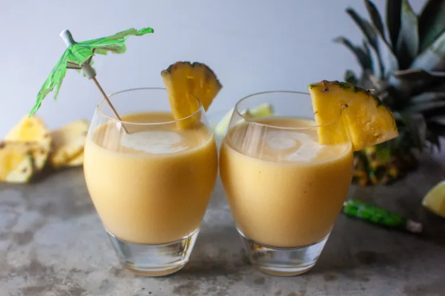

Piña Colada

Description
While I start with fresh pineapple, don’t worry, I still use
classic canned cream of coconut (a sweetened, thicker, syrupy
delight that’s to coconut milk almost what sweetened condensed
milk is to regular milk) as the second ingredient. I add a
little lime juice, because I love it with coconut and pineapple,
just enough white rum, and I blend it until it’s creamy and
smooth and immediately — even in the cold of a NYC winter —
causes a dewy condensation on the outside of the glass. No
swim-up bar, no beachy horizon, but I do have a paper palm tree
umbrella in my perfect-at-last drink, so I must be doing
something right.
Fresh pineapple can range in sweetness, juiciness, and intensity
so feel free to adjust these proportions to your tastes. I
definitely think you could use a bag of frozen pineapple chunks
instead of fresh here; I usually find them a touch more sweet.
Ingredients
- 1 medium-large pineapple
- 6 tablespoons sweetened cream of coconut
- 6 tablespoons white rum
- 1 tablespoon fresh lime juice
Steps
- Prepare your pineapple:
- Cut the tree-like top off and then one slice off the
bottom, both to remove the skin and to create a flat
surface underneath to stabilize the pineapple.
- Cut one clean 1/2-inch slice from the bottom and set
it aside to garnish your drink later.
- Cut the skin off the rest of the pineapple in large
strips, making sure to cut deep enough into the
flesh to remove all of the skin.
- Quarter the pineapple and turn each quarter on its
side. Remove the core from each quarter in one long
cut.
- Cut the pineapple quarters into 1/2-inch slices.
- Cover a baking sheet or tray with plastic (makes for
easier removal and no lost juice) and arrange
pineapple chunks in one layer. Freeze until solid.
- Place 3 cups of pineapple chunks in a
blender along with cream of coconut,
rum, and lime. Blend until
absolutely smooth and velvety.
- Pour into 8-ounce glasses and garnish with reserved
pineapple.
- Add a drizzle of coconut milk on top.
- Garnish with a maraschino cherry and paper umbrella, if you
wish. Enjoy right away.